Precisanon approssimativa
Dati prima degli aggettivi. «12 mesi di shelf life», mai «shelf life eccezionale».
Brand Book — il manuale operativo della marca.
Definisce come la marca Raichem deve essere compresa, espressa, applicata e protetta — articolata in dodici capitoli operativi.
Il valore non è nel catalogo. È nel controllo sulla variabile più critica del processo del cliente. Dove gli altri vedono un prodotto, noi progettiamo un sistema: prevedibile, ripetibile, verificabile.
Una variabile instabile, osservata. Da qui inizia il controllo.
Chi è Raichem, perché esiste, cosa la guida.
Raichem non vende un prodotto chimico. Trasforma una variabile chimica instabile in un sistema controllato, affidabile e replicabile.
IL VALORE NON È NEL CATALOGO. È NEL CONTROLLO.
Fornire soluzioni BPO ad alte prestazioni, sicure e sostenibili, personalizzate sulle esigenze dei clienti industriali in tutto il mondo.
Essere il punto di riferimento internazionale per innovazione, qualità e affidabilità nei sistemi a base di perossido di benzoile.
Controllo.
Non il catalogo. Non la varietà. Non il prezzo. Il controllo sulla variabile più critica del processo del cliente.
Il ruolo di Raichem nella mente del mercato.
Per produttori di resine, formulatori e reseller industriali — Raichem è lo specialista nei sistemi BPO che combina specializzazione tecnica, personalizzazione multi-variabile e continuità operativa verificabile.
Shelf life · costanza interlotto · ISO 9001:2025.
Forma, concentrazione, colore, viscosità, packaging.
Affiancamento proattivo · 99/100. Partner, non fornitore.
Continenti. Raipack verticale, white-label e stock.
La chiarezza sui limiti è parte della credibilità. Definire ciò che non siamo protegge ciò che siamo.
Il sistema prende linguaggio. Preciso, concreto, sicuro di sé.
Personalità, voce, claims e linguaggio della marca.
Preciso, analitico, affidabile — ma mai distante. Sei attributi, ciascuno con il suo significato. Scorri: il volto resta, la parola cambia.
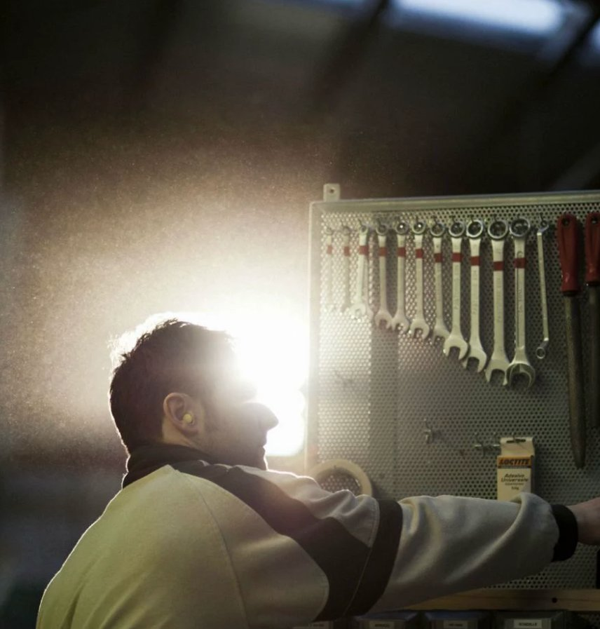
Dati prima degli aggettivi. «12 mesi di shelf life», mai «shelf life eccezionale».
Situazioni reali, non concetti astratti. Parla nei panni del buyer persona.
Comprende il contesto e usa il linguaggio del mestiere del cliente.
Dice ciò che sa con convinzione, perché ha i dati per farlo.
Costanza interlotto, verificabile. Se fallisce, non è Raichem.
Risolve prima il problema del cliente. Niente teoria fine a sé stessa.
When you think BPO, think Raichem.
Accuracy is not a feature. It's our standard.
If it fails, it's not Raichem.
One standard. A thousand configurations.
We power your brand. Quietly.
Unpredictable conditions. Predictable results.
Focused on BPO. Driven by performance.
Le parole che usiamo — e quelle che non useremo mai.
Regola: se un aggettivo potrebbe essere usato da qualsiasi azienda in qualsiasi settore, non è adatto a Raichem.
Come si organizzano i messaggi per industria e buyer persona.
When you think BPO,
think Raichem.
Assegnati a ciascun territorio di marca.
Ognuno con vocabolario specifico.
Con angolo e apertura propria.
La voce di marca non cambia mai. Ciò che cambia è il vocabolario, il punto d'ingresso e l'enfasi.
Ogni industria ha la sua parola chiave e il suo tono — declinati nella sezione Sistemi osservati. La voce resta una: cambia solo l'enfasi.
8 buyer personas · 7 industrie · un sistema di comunicazione integrato.
In tutti i segmenti, la decisione tecnica precede la decisione di acquisto. Il Purchasing Manager non decide quale catalizzatore usare, ma può bloccare l'acquisto per prezzo o logistica — il punto debole di Raichem.
Valida il prodotto. Decisione tecnica.
Valida approvvigionamento. Continuità operativa.
Negozia prezzo e condizioni. Può bloccare.
«Stessa formulazione. Stessa reattività. Ogni volta.»
«La vostra certificazione è costruita sulla costanza del nostro prodotto.»
«Dai 5°C ai 40°C. Stessa reattività, stesso risultato.»
«Il difetto che vede il consumatore nasce nel processo che non vede.»
Il caos diventa griglia. La forma del controllo: blueprint, rosso, struttura.
Colori, tipografia, fotografia, layout e applicazioni.
La composizione segue la gerarchia dell'informazione.
Lo spazio bianco è un elemento attivo, non un vuoto.
Mai stock. Impianti, processi, persone reali.
Leggibilità prima dell'impatto estetico.
Il rosso non è dominante: è un accento strategico. Origine — packaging perossidi per normativa.
SISTEMA TIPOGRAFICOLabel tecniche in IBM Plex Mono accompagnano ogni elemento: danno un registro preciso e da scheda tecnica.
USO DEL LOGOTIPOIl marchio: wordmark e swoosh — la traiettoria che prende forma controllata. Area di rispetto pari all'altezza della «R». Versioni ufficiali su fondo chiaro e negativo.
Fotografia reale di impianti, processi e persone Raichem. Luce dura, ambienti veri, rosso come unico accento — mai stock.
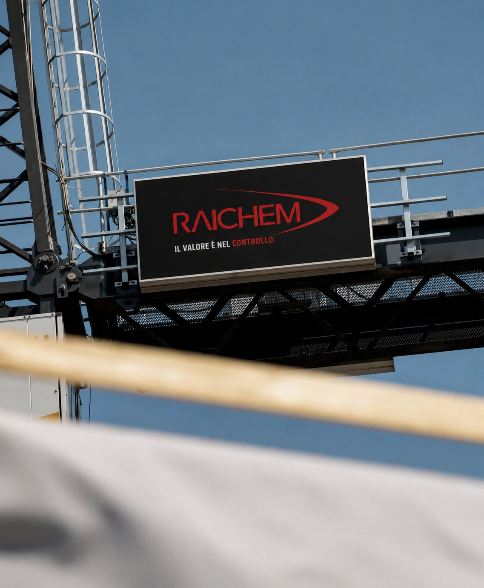
02 ImpiantiObiettivo, tono e struttura per ogni canale, più gli spazi per mockup e pezzi dinamici.
Posizionarsi come specialista BPO.
Chi è Raichem e perché è rilevante.
Informazione accurata, senza marketing.
Aprire la conversazione, non chiudere la vendita.
Reputazione e posizionamento.
Relazione di co-creazione.
Dal campo alla fiera, dal packaging al digitale: ogni pezzo parla la stessa lingua. Esplora i mockup — puliti, uno per uno, a tutto schermo.
 ↗ Espandi01
↗ Espandi01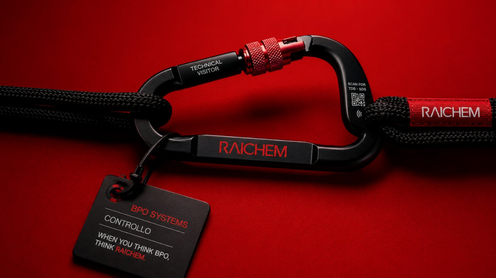
↗ Espandi03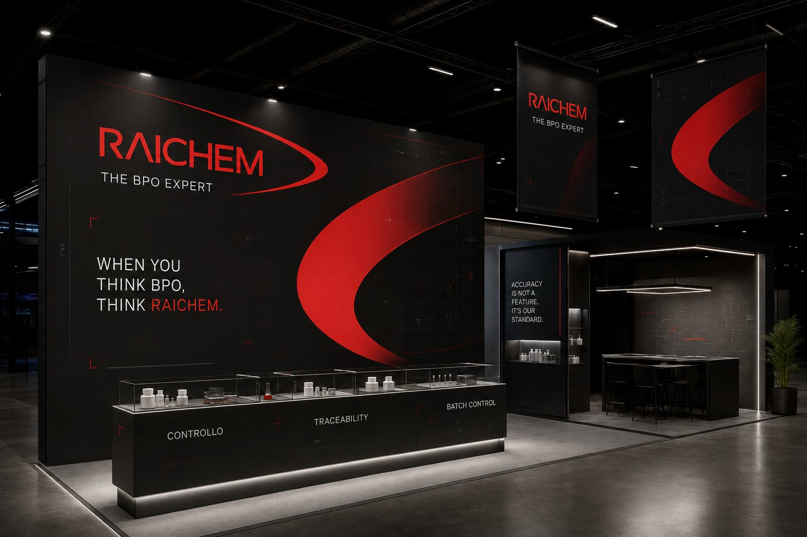
↗ Espandi04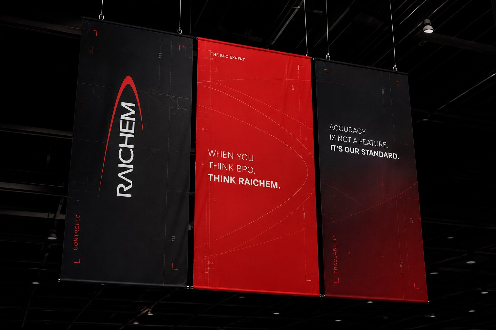
↗ Espandi05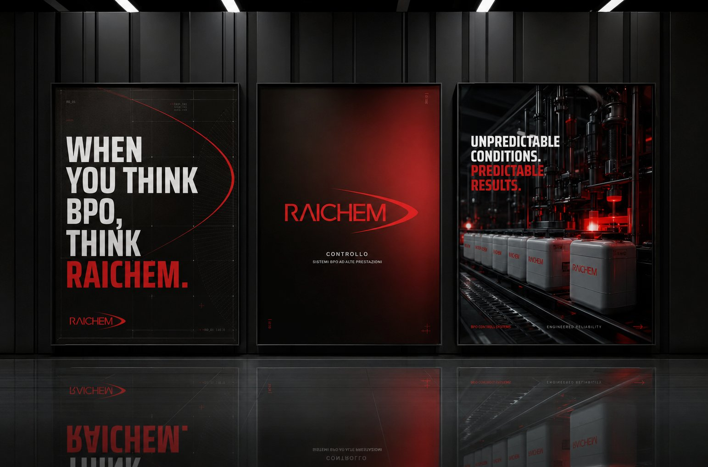
↗ Espandi06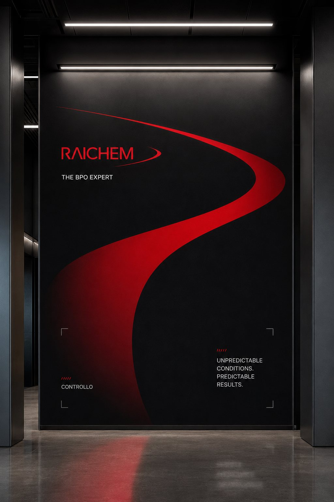
↗ Espandi07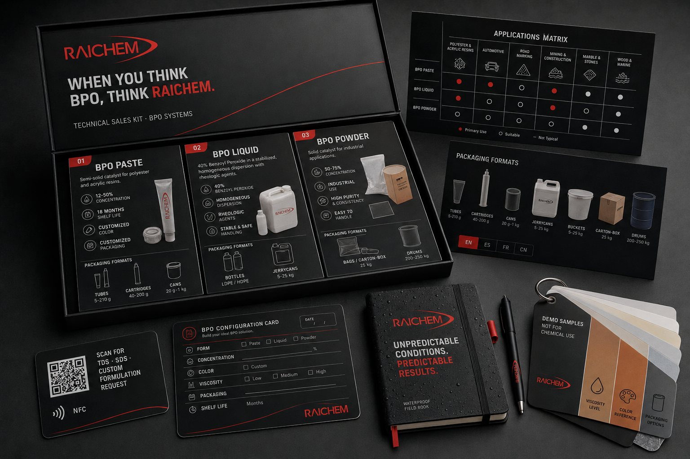
↗ Espandi08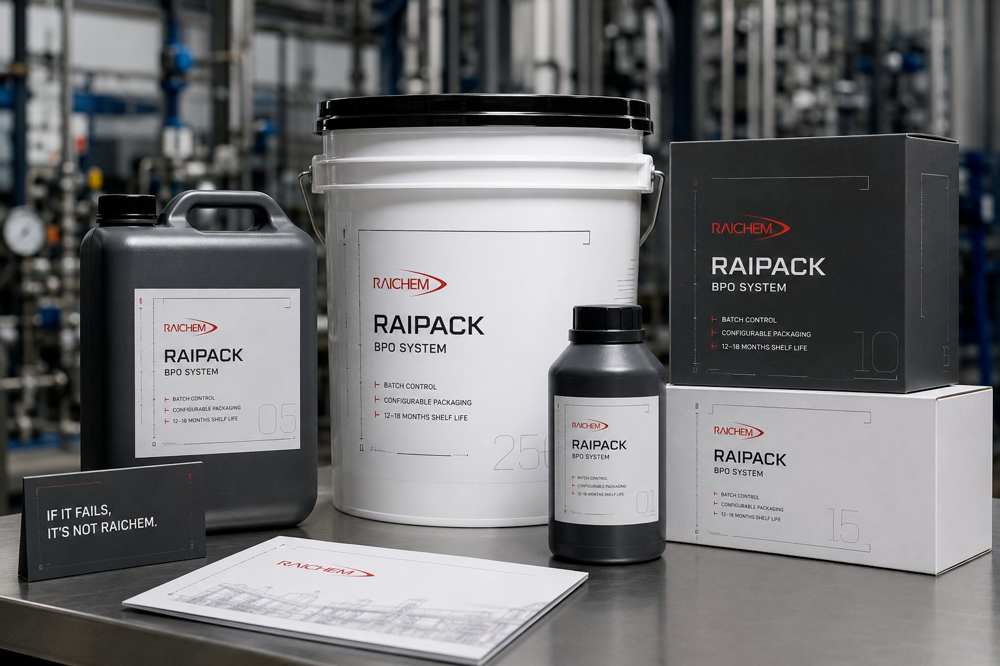
↗ Espandi09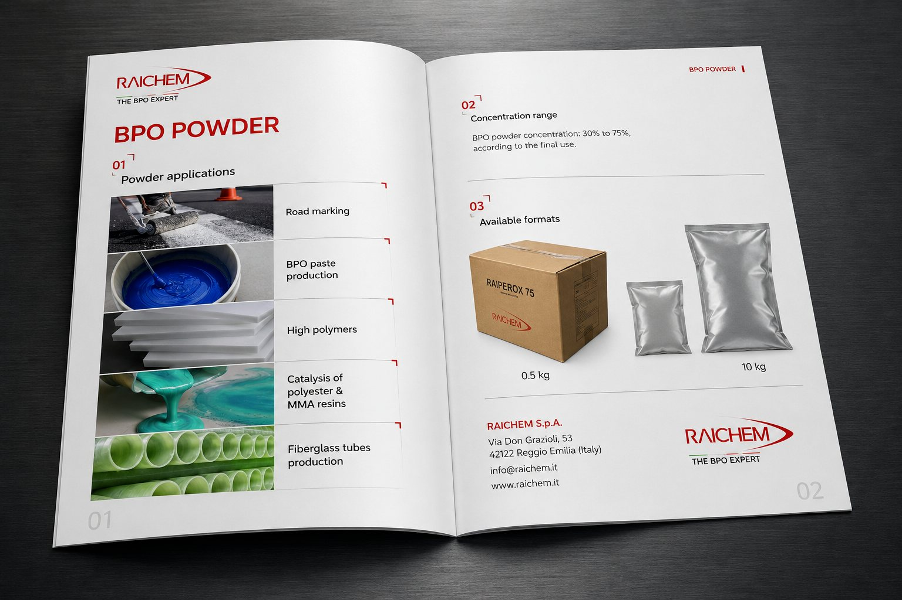
↗ Espandi10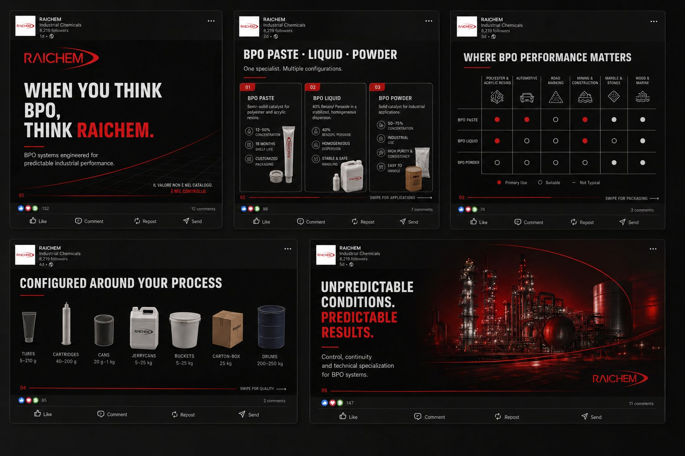
↗ Espandi11Come suona — e come non suona — la marca.
14 punti da verificare prima di pubblicare qualsiasi pezzo.
Il controllo si mantiene. Documentato, versionato, protetto.
Come la marca viene approvata, aggiornata, distribuita e documentata.
Standard: responsabile area · Esterni e fiere: Direzione · Nuovi claim: validazione strategica · Co-branding: approvazione preventiva.
Documento vivo: si aggiorna con le decisioni di marca. Versionato e datato. Una sola versione ufficiale.
Cartella centralizzata. Sempre accompagnati da linee guida. Estratti specifici per tipo di partner.
Ogni decisione va documentata. Alimenta le versioni successive. Evita derive non tracciate.